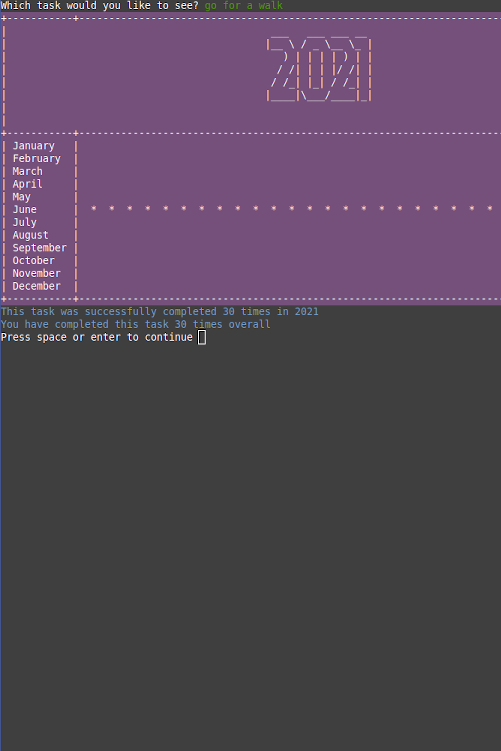

Portfolio Site
My first attempt at creating a static portfolio site using the
skills I learned in HTML and CSS in the first month of
learning to code. It contains a Homepage, About and Contact
page in addition to pages for projects and blog posts and
templates for individual posts.
The site is designed to be easily modified as I develop new skills
and work on new projects to showcase my interests and skills
as a developer. It also features responsive design to accommodate
different screen sizes.
The original repository can be found here
while the repository for the current site can be found using the button below.
Visit
Daily Task Tracker
Written in Ruby, this command line application helps you create and keep track of
activities you would like to do every day that might form part of a larger goal.
The app is designed to give users a "visual reward" for seeing their progress. It
is inspired by Simone Giertz's Every Day Calendar.
Users can create new tasks to track and delete them as needed.
Each day users can input whether or not they completed the task or add a previous
date to check off. This progress can then be displayed visually in a monthly
counter view for each task they have completed. Persistent storage is handled with text files.
Visit

Fresh Local
Fresh Local is built with Ruby on Rails. It is a place to easily buy and sell
homegrown produce in your local area, particularly in the context of the
COVID-19 pandemic. The target audience is people who grow their own produce
in towns and cities in Australia in addition to buyers who want to shop locally,
potentially increase their food security or are interested in reducing their carbon
footprint while eating healthily.
Fresh Local makes use of Heroku, TailwindCSS, PostgreSQL, Cloudinary and plugins for user management and permissions.
Visit
Get Lucky 3000
Hackathon project to practise Git collaboration and JavaScript.
Are you sick of downloading the latest dating app...
Only to spend hours creating your profile without even swiping once!...Not anymore!
Using its advanced state of the art A.I
LUCKY 3000 will take your information and create the dating profile of your dreams!
Visit
Drone Projects
For several years I have been interested in the use of drones in farm
management. This began as experimenting with photogrammetry using a DJI
Phantom 4 and has culminated in building my own prototype drone for building
high resolution, large scale georeferenced maps. These maps are used to measure
changes to the property over time and weed management. The processing pipeline
consists of running applications from the OpenDroneMap
project on AWS while the drone hardware and software uses projects in the PX4 ecosystem.